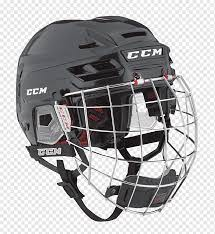
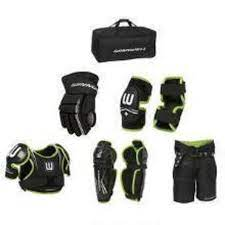
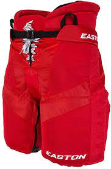
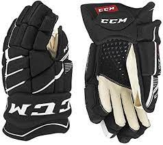
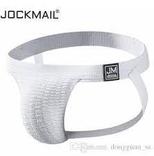
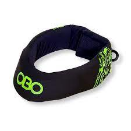
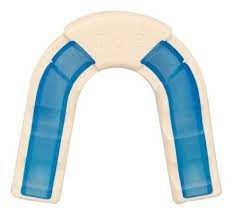

En lo que se refiere a la prevención de lesiones graves, esta es la pieza más importante del equipo. Los cascos deben estar aprobados por el Hockey Equipment Certification Council (HECC) e incluir una máscara que cubra todo el rostro, con un protector para la barbilla y una correa o cincha. Asegúrese de adquirir un casco que sea de la talla de su hijo, e insista en que lleve siempre la correa de la barbilla abrochada y apretada para que el casco permanezca en su sitio.

Como con el casco, asegúrese de que los patines sean del número que calza su hijo. Los patines se tienen que llevar bien apretados; por lo tanto, si son de un número inadecuado, le pueden hacer mucho daño en los pies. Los patines deben ofrecer mucha sujeción en la parte del tobillo y estar provistos de un protector metálico o de plástico duro que cubra los dedos de los pies. Mantengan los patines bien afilados para que corran mejor y tiendan menos a quedarse enganchados en los surcos del hielo.

Todos deben ser específicos para el hockey. Los equipos de protección para el fútbol o el lacrosse (un deporte de equipo que se practica con palos provistos de una red en el extremo) no proporcionan la protección necesaria para el hockey. Los protectores de la parte inferior de la pierna (la rodilla y la espinilla) siempre deben tener una parte externa de plástico duro y llegar hasta la parte más alta de los patines del niño

Deben llegar hasta la rodilla y estar acolchados por delante, por detrás y por los lados, tanto en la parte de los muslos como en la del tronco.

Otro artículo que debe ser específico para este deporte, ya que los guantes de hockey deben permitir el movimiento de los dedos al tiempo que protegen las manos hasta más arriba de la muñeca.

con coquilla. Se pueden adquirir como parte de la ropa interior de hockey o bien por separado.

Aunque algunas ligas de hockey no los requieren, estos protectores ayudan a proteger el cuello de posibles lesiones.

Protege los dientes, los labios, las mejillas y la lengua, ayudando a prevenir posibles lesiones en la mandíbula.
